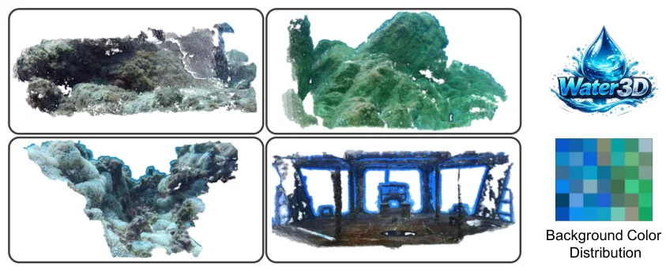
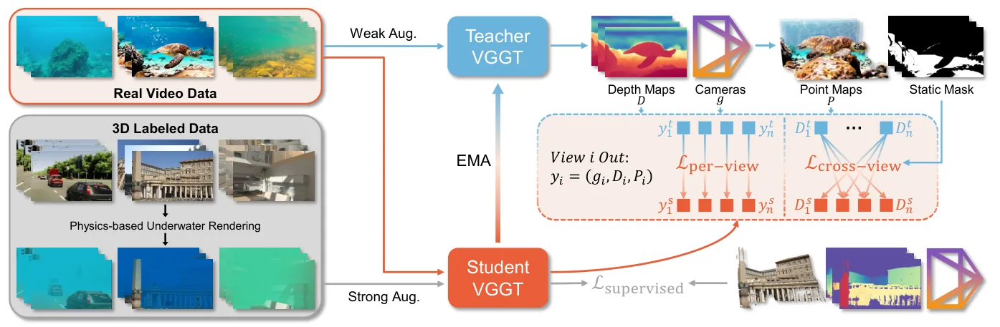

Wat3R：无需标注的水下三维几何学习Wat3R: Underwater 3D Geometry Learning without Annotations
对水下 SLAM/重建的数据稀缺和视觉退化问题有参考价值，且开放代码/数据；更偏学习式深度/点云重建，需确认度量尺度、不确定性和与 VO/SLAM 后端的结合方式。
一句话工作总结
用无标注水下视频和跨视角一致性，把通用前馈三维重建模型适配到水下几何估计。
摘要
Wat3R 针对水下三维几何估计中光衰减、散射和缺少大规模高质量 3D 标注的问题，提出 cross-domain semi-supervised learning 框架，把空气中的 feed-forward 3D reconstruction 模型适配到水下场景。方法采用 teacher-student 架构，只利用大量未标注真实水下视频学习鲁棒几何表示，并设计 cross-view consistency loss，用其他视角的几何线索补偿当前视图因水体衰减和散射造成的信息退化。作者还构建 Water3D 数据集用于水下几何任务评测，并开放代码和数据。
Estimating 3D geometry in underwater environments presents unique challenges due to light attenuation, scattering, and the absence of large-scale, high-quality 3D annotations. Pioneering methods rely on massive dense annotations that are impractical in underwater settings. In this paper, we propose Wat3R, a cross-domain semi-supervised learning framework designed to adapt feed-forward 3D reconstruction models from air to underwater scenes. Uniquely, our method eliminates the need for any annotated underwater data following a teacher-student architecture, that learns robust geometry representations merely on abundant unlabeled real underwater video footage. We also design a cross-view consistency loss that leverages geometric cues from other views to compensate for the information degradation in the current view caused by water attenuation and scattering. Furthermore, considering the lack of comprehensive evaluation benchmarks, we construct Water3D, a diverse dataset covering various water bodies and underwater scenarios, designed for geometric task evaluation. Experimental results demonstrate that Wat3R outperforms current state-of-the-art methods in underwater multi-view depth estimation and point cloud reconstruction. The dataset and code are available at https://github.com/LSXI7/Wat3R .
中文解读摘录
- 链接：https://arxiv.org/abs/2607.08772 ｜ PDF：https://arxiv.org/pdf/2607.08772 ｜ 代码/数据：https://github.com/LSXI7/Wat3R
- 中文题名：Wat3R：无需标注的水下三维几何学习
- 关键信息：Wat3R 面向水下环境的光衰减、散射和缺少高质量 3D 标注问题，采用 cross-domain semi-supervised teacher-student 框架，将空气中 feed-forward 3D reconstruction 模型适配到水下场景。方法利用大量未标注真实水下视频，并设计 cross-view consistency loss，用其他视角几何线索补偿当前视图信息退化；同时构建 Water3D benchmark。
- 为什么值得看：水下 SLAM/重建常受能见度、散射和纹理退化影响，标注数据尤其稀缺。Wat3R 提供了从通用重建模型到水下几何的无标注适配路线，并开放代码/数据，适合后续和水下 VO/SLAM、主动照明、声呐融合比较。
- 需要核查：teacher pseudo-label 噪声是否放大；跨水体/浑浊度/光照条件泛化；Water3D 评价指标与真实尺度；是否能输出对 SLAM 后端有用的度量深度和不确定性。
图表/页面预览

{kind=link}

{kind=link}
